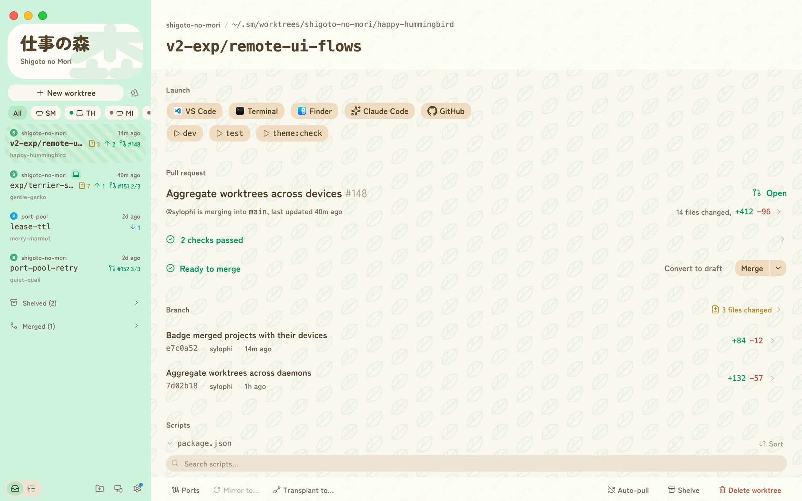
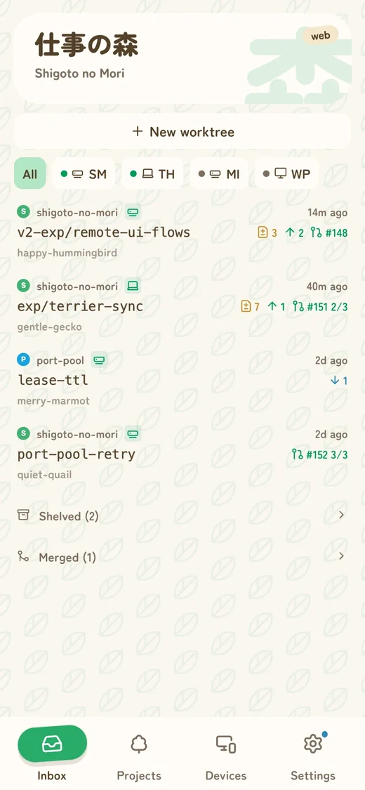
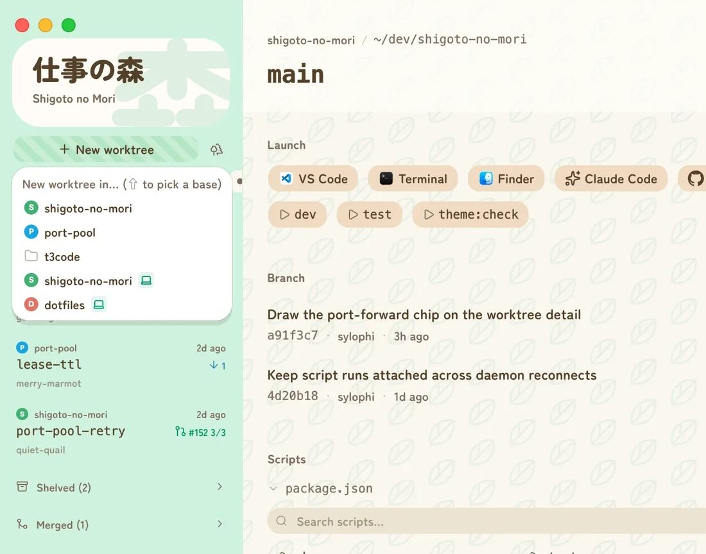
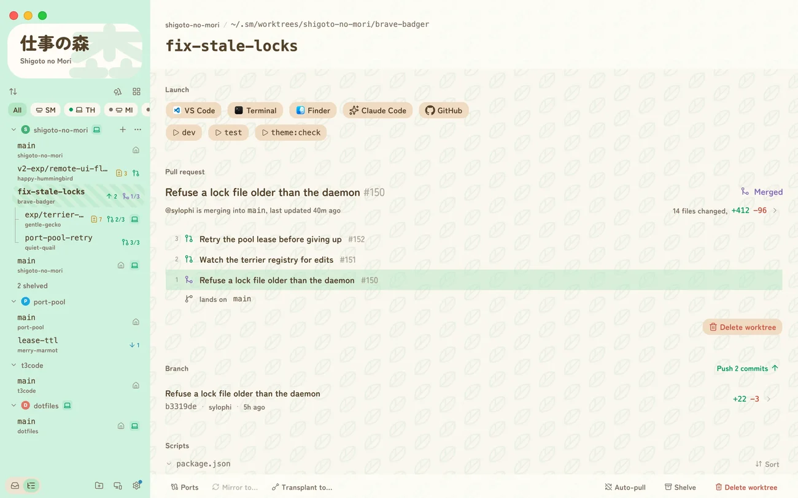
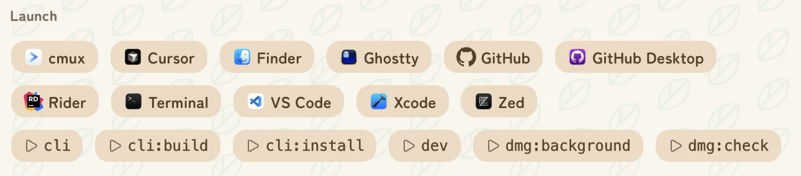
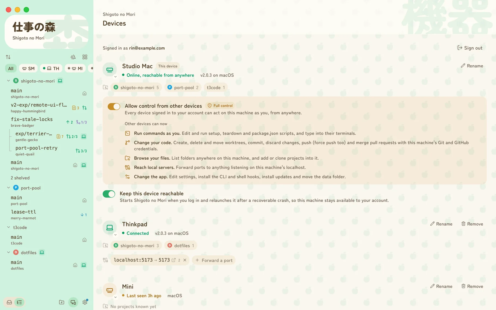
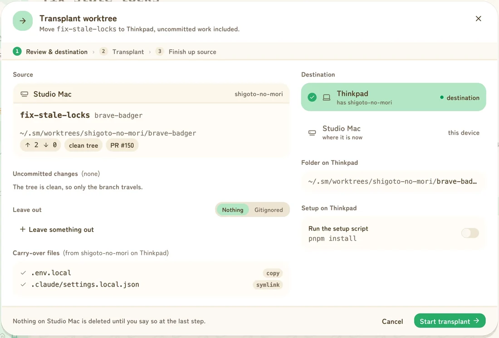
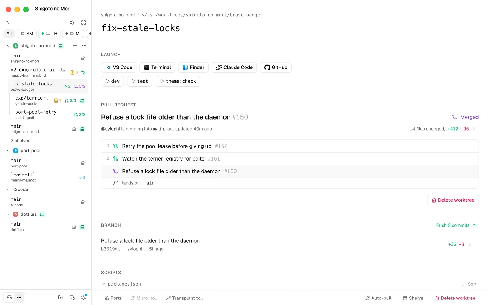
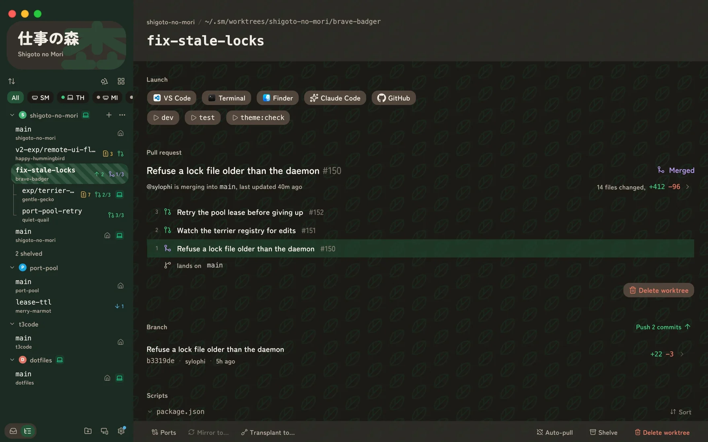

Carry-over
List the gitignored files a worktree needs, like
.env.local, and each new one gets a copy or a
symlink. A .worktreeinclude file works too.
Create a worktree in two clicks, open it in the tools you already use, and see where each branch stands, whether it's on this Mac or another one of yours.
For Apple Silicon Macs. Signed, notarized, free and open source.


git worktree gives every branch its own folder, so an
agent can work in one while you review a pull request in another.
Setting each one up by hand is the slow part, and so is cleaning up
after.
By hand
$ git worktree add -b fix-login \
../app-fix-login main
$ cp .env.local ../app-fix-login/
$ cd ../app-fix-login
$ pnpm install
$ cursor .
# a week later, for each one
$ git worktree remove ../app-fix-login
$ git branch -D fix-loginIn Shigoto no Mori

Create
You get a fresh branch off your default branch, in its own folder, ready to open. Everything a new checkout usually needs comes along.
List the gitignored files a worktree needs, like
.env.local, and each new one gets a copy or a
symlink. A .worktreeinclude file works too.
Run pnpm install, or anything else, when a worktree
is created, and your own cleanup when it's removed.
Hold Shift to branch from something other than the default branch, check out an existing branch, or start from an open pull request.
Every worktree gets a placeholder name until you rename it:
Keep track
Each worktree is one row in the sidebar. It shows enough to act on without opening anything.

Read the diff of your uncommitted changes, one commit or the whole PR, then commit all of it or only part.
Merge, squash or rebase, whichever your repo allows, including a whole stack at once. Then remove the worktree in one more click.
Shelve what you're not touching this week, and merged worktrees fold away on their own.
Launch
Every worktree gets a row of buttons for the apps on your Mac: editors, terminals, Git clients and agent apps. Add your own shell commands too, per project or for all of them, like starting an agent CLI in that folder.

The first nine have shortcuts. Scripts from
package.json run in a built-in console with one
click.
It doesn't replace your editor, terminal or agent. It opens them in the right folder.
Other machines
Sign in on each Mac and their worktrees show up in the same list, looking just like the local ones. Machines connect directly on the same network, or through a tunnel when they aren't. There's no VPN, SSH key or router setting to deal with.
Start a dev server on the other machine and open it on
localhost here. The files stay where they are.
Keep a worktree in sync on two machines: every file, not only what git tracks, in both directions. Edit on either side and git agrees on both.
Move a worktree once, uncommitted changes included, then keep, shelve or remove the copy left behind.


app.shigomori.com shows the same forest in any browser, with a layout made for phones. It doesn't hold projects itself. It works through the Macs on your account.
Other devices can see a machine's worktrees, but can't change anything on it until you turn on Allow control from other devices on that machine.
For agents
The app comes with an sm command, mostly so coding
agents can do what you do in the app: start a task in a fresh
worktree, check its status, merge its PR and clean up, or hand it
to another machine. Worktrees an agent makes show up in the app
like any other.
Install the skills and your agent learns the workflow without you spelling it out each time. The same commands work by hand, too.
# teach your agent the workflow
$ npx skills add \
https://github.com/sylophi/shigoto-no-mori
# what an agent runs for a task
$ sm wt create
$ sm wt status
# move it to another machine
$ sm wt send --to "Studio Mac"
# merge the PR and remove the worktree
$ sm wt landLooks
The default look borrows from Animal Crossing, which is where the name comes from: Dōbutsu no Mori is "animal forest", and Shigoto no Mori is "work forest". If that's not for you, a neutral theme is one setting away. Both come in light and dark.


Also included
One page lists every worktree with its size, age and merge state. Only merged worktrees with nothing uncommitted are ticked for removal. Anything else you pick yourself.
Mark a checkout, like your main one, and it fast-forwards from its upstream whenever the app fetches.
Worktrees made with plain git can be brought into the app.
Jot down what a worktree is for, right on its page.
Put a worktree out of sight without deleting anything.
Builds are signed and notarized. New versions download in the background and install the next time you restart.
Before you download
gh.For Apple Silicon Macs. Free and open source.